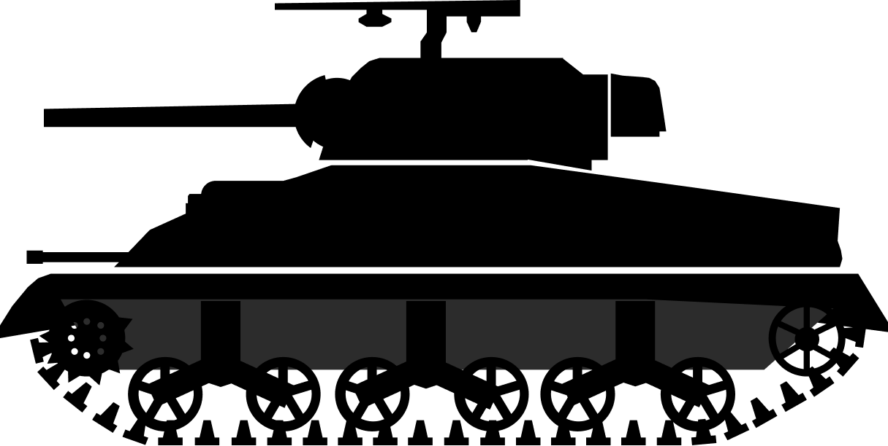
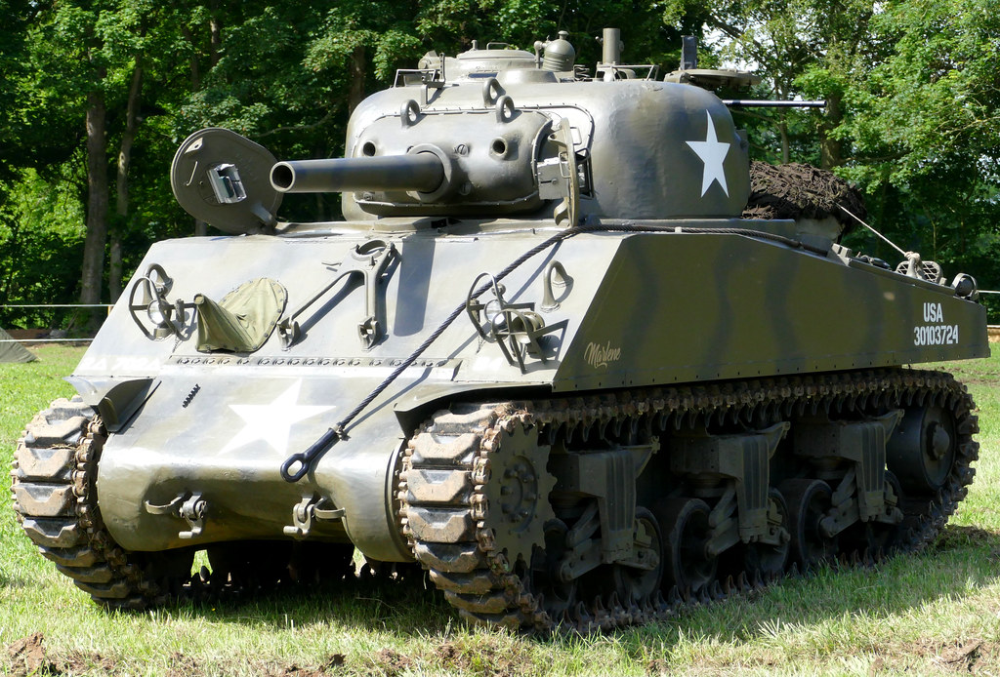

M4 Sherman

The M3 Medium tank was a good stop-gap during the early war years, although the M4 sherman quickly overtook it. The M4 provided a full 360 degree swivel for the 75mm gun unlike the M3 Lee. The M4 Sherman involved a 75mm gun mounted on the head that was attached to the M3 Hull. This draft was accepted in May. The US army ordered 1,000 tanks per month in 1942. The disadvantage of the M4 is that its ammunition is liable to cath fire when hit. M4s were also adopted by the British who nicknamed them the "Fireflies". To end it, the M4 Sherman was reproduced over 55,000 times and was the most important tank of World War 2.
| Armament | Armor | Dimensions |
|---|---|---|
| Goes Here | Goes Here | Goes Here |
